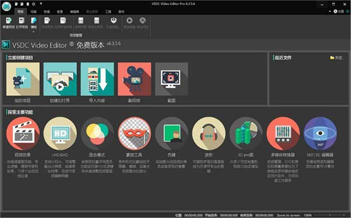

视频编辑剪辑，视频合并，视频处理，VSDC Video Editor Pro - 美少女cc | msncc
介紹

VSDC Video Editor Pro中文版是一款小巧专业的视频编辑工具，VSDC Video Editor Pro最新版功能强悍，为用户带来了方便、可靠、强大的视频编辑功能，让您可以轻松剪切和合并视频文件，VSDC Video Editor Pro软件操作简便，具有简单又直觉交互的界面，能帮你用最小力量创造视频。
VSDC Video Editor Pro中文版是一款方便、可靠、功能强大的视频编辑应用软件，可以剪切和合并视频文件，应用音效和视效，添加滤镜，进行图像校正，创建幻灯片秀、添加背景音乐。使用多彩色色键和高级属性设置可以将视频升级到专业水平。
几乎包括所有的视频格式，还支持各种各样的视频解码器，可以大大提高你的工作效率，而且在编辑过程中，该工具还能帮助我们给视频文件添加线、矩形、文本、工具提示、图像、音频以及视频等。应用程序提供丰富功能选择，并具有简单又直觉交互的界面，
能帮你用最小力量创造视频。此外，软件附带DVD刻录工具，可让您轻松将作品结果刻录到光盘上，除此之外，还支持视频格式转换、视频捕捉等功能，专用于编辑视频文件和创建涉及各种视觉和音频效果的任何复杂的视频。该程序提供了丰富的功能，但有一个简单和直观的界面，允许您创建一个最起码的视频。
VSDC Video Editor Pro软件特色
1、非线性视频剪辑器
我们剪辑器是非线性工具，意思就是不像其他保持线性序列的剪辑器，我们软件可以将对象放在时间轴的任何位置，对象大小也没有限制。此外，对象属性、形式和位置都能随时更改。
2、视效和音效
您可以给视频添加大量的视效和音效，获得需要的结果。因为视效量较大，视效被分成五个种类，方便查找：色彩校正、对象变形、滤镜、过渡、特效。
3、混合模式和INS式滤镜
混色是一种按照您的口味改变视频画面的方法。使用各种可调的参数，您可以让视频变更专业和独特。新手或者想节约时间的可以单击应用INS式滤镜。
4、蒙版
VSDC免费剪辑器能创建各种形式的蒙版拿来隐藏、模糊或者高亮食品中具体的部分。您可以在蒙版区域内外应用特效。蒙版主要用途是保护个人隐私或者清除不需要的地方。
5、简单导出到社交网
VSDC免费剪辑器提供专门导出配置文件，以便减少选择合适的格式麻烦，能准备无障碍上载。
6、子像素精度
对象子像素精度地安排在场景中，以便保证流畅动画、旋转、变形以及准确相对定位。
7、支持所有常用的格式
我们软件支持几乎所有视频、图像和音频格式和编码器。不像其他应用程序，当您用我们软件剪辑文件的时候，就不需要再装其他转换工具。
8、4K和HD导出
目前VSDC是唯一的能够用新的H265/HEVC编码器的免费剪辑器，用最小文件尺寸保持最高质量，处理4K和HD文件不可少的工具。
9、针对具体多媒体设备创建视频
用大量预装的配置文件容易创建为最常用的多媒体设备的视频，包括DVD播放器、iPod/iPhone/ipad、PSP、任何智能手机和普通手机、Sony PlayStation、Xbox、Zune、Archos、iRiver、Creative Zen、Blackberry、MP4播放器、很多其他。
10、处理图表
您可以创建各种图表，包括3D图表：柱状图、堆栈柱状图、点、对话筐、线、分散线、快速线、样条曲线图、样条曲线区域图、堆积面积图、堆叠式样条区域图、范围柱状图、甘特图、饼图、3D饼图、3D圆环图、雷达点、雷达线、雷达区域图、雷达样条线图、漏斗图、金字塔图、3D金字塔图、高低图、蜡烛图。这些对象能基于动态更改的数据。此外，图表形式是全面可调的(图表外形、坐标轴、自定义轴、图解、图表名、轴名、线、图标、等)适合于不同的需求。已装的颜色主题能快速地改变图表的外表。
End
Other .. 解壓: msncc 美少女cc
學習、資訊、 或資源分享,如有失效的,請留言
更多下載通道正在更新....
資源收集于網絡,僅供學習研究,製作不易,若是喜歡,請考慮補上正版,再體驗離綫暢玩。
可到官網或其他平臺 搜索購買